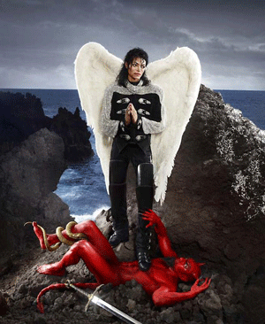

-
Who’s Bad? The Kitsch Pop Surrealism of David LaChapelle
by Laila Pedro July 20, 2010
Salvador Dalí, it’s been said, was not a great artist, he just played the part until everyone believed it. Today that assessment seems both insightful and quaint: insightful because, to anyone not blessed with an extraordinary tolerance for kitschy self-aggrandizement, the work has not aged well (college dorm walls be damned), quaint because the idea of the great artist has been so thoroughly dismantled, satirized, reassembled and dissected as to become something of a sepia-toned, verbena-scented relic, a curiosity of intellectual history. Regardless of greatness, pretended or otherwise, Dalí’s work can be a hell of a lot of fun. What’s more, for inaugurating this campy, tongue-in-cheek, crass and clever performance of art and artistry, David LaChapelle, whose collection of photographs, American Jesus, will be on view at Paul Kasmin gallery through 18 September, remains in his debt.
LaChapelle is a flashy, marquee name, a one-word descriptor for a kind of artistic (and economic) presence. Among the most common words applied to him and his work are: outrageous! vivid! hip! hot! As a director, art and fashion-photographer, he performs a kind of hybrid pop-surrealism; and though I wouldn’t necessarily lump it in with the California style pop surrealism of the 90’s, he does have a lot in common with painters like Mark Ryden, whose creepy-camp paintings blend a lovely mastery of classical technique with a morbid color sense and wacked-out-evil-bunny-dream subject matter. LaChapelle’s work isn’t surreal in the stricter art-historical sense of the term, but that is because he’s working with a similar vocabulary but in a different aesthetic register. “Surreal” is a word that gets thrown around a lot by art critics, particularly those of the armchair variety, without any real sense of what it means. A useful distinction, made by Herschel B. Chipp in his classic history of modern art, is that between “one of the important poles to which art has always been drawn,” and “the ideology of an organized group of artist and writers [in Paris in the ‘20’s].” LaChapelle occupies a curious space between the two. On the one hand, his work certainly gravitates, or at least gestures, toward the former: “a significant constituent of human feeling, a love for the world of dreams and of fantasy.” In his “art” photographs (more so than in his videos), he certainly engages with fantasy, but it’s hard to see love in the arch, sneering distance of his winking assemblages. He refuses to get lost in the fantasy land, and this complete surrender is an essential part of a properly surreal art (see, for instance, The Garden of Earthly Delights). Chuck Palahniuk, hardly worth mentioning as a literary figure, wrote one thing, ever, that impressed me: “Deliver me from clever art.” The cleverness of LaChapelle, the particular trash-pop superiority of it, keeps it from losing itself in true surreal madness, but that is also part of what makes it kind of great. Kind of.
American Jesus is echt-LaChapelle. The subject of its three centerpiece photos is Michael Jackson (a person so synonymous with the vicissitudes of fame that his visage works more as allegory than as characterization—it indicates an idea, not an individual) who is inserted into various poses instantly recognizable to any art student, or to anyone who’s ever been in a museum, really. Kasmin’s unfinished cement floor and stark white walls seem another nod to a 90’s aesthetic. Intentionally or not, these work well—what better backdrop for a LaChapelle show than what could be the set of an Urban Decay nail polish commercial circa 1997? The Michael Jackson photos, like most images of him since his death, have acquired a peculiar pathos. His angelic voice, unearthly dancing, and wrecked face were always massively compelling, but became particularly tragic in his later years, and that’s one key to the photos—LaChapelle always picks a great subject. By playing to our collective cultural consciousness, on multiple levels, he insures his work usually has some kind of impact. Each of the photos contains a Michael Jackson lyric in the title, and in the first the King of Pop is posed with an angelic figure, clad in his iconic mourning-armband, shoulder-padded jacket, with the addition of the Sacred Heart glowing beatifically in the center of his chest. A dove alights on one hand. This baroque symbolic layering is what makes LaChapelle’s work simultaneously trite and so much fun. It’s like Where’s Waldo in a blender with pop culture and art history. That dove, for instance, winks at both Michael’s own vaguely demented Neverland Ranch-eternal-childhood-innocence routine, and at the medieval (and Renaissance, and Neoclassical, etc) convention of painting the Holy Spirit as a white dove. Once we start down the path of visual referents though, everything becomes tangled—If Michael is the Son and the bird the Spirit, where is the third part of the Trinity, the Father? Is LaChapelle just messing around? Picking references at random? Is the impact of the Sacred Heart and Michael’s figure enough that the image doesn’t need to formalize its symbolism any further? This last option is, I think, the most palatable, because it acknowledges the preeminence of the pop in his photography. The other symbols are used, referenced, and cast aside— while the real power comes from top 40 Radio, not the Old Masters.
The third image, of Michael-the-martyr as Saint Michael, throwing the devil down to Hell, plays even more havoc with its bed of emblems, simply by virtue of its title. We have Jackson the person, and Michael the archangel, mixed with the pop signifier “Michael Jackson” and the endless stream of art historical references. In this photo, Michael wears a sort of Bad-era jacket, and has literal wings. The jokey pathos is at the heart of what LaChapelle does. It’s hilarious, irritating, ingratiating and insouciant all at once. There is a Pietà-themed picture too; a very fetching young man as Jesus, substituted for the traditional figure of Mary, holding a Jesus-Michael. The martyrs have become interchangeable—the consistent fate of all symbols in LaChapelle’s work.
What really connects him to Dalí, however, is his studies. In a rare move for a photographer, LaChapelle painstakingly sketches out his work, with real skill, before assembling the real-life subjects. These drawings and collages are excellent, detailing the thought and craftsmanship that go into the work, something the stagey immediacy of photography often obscures. Likewise, while Dali’s limp clocks may now lack punch, something like the sketch for Female Figure with Head of Flowers, while retaining the obvious Surrealist-kitsch signifier of the incongruous head, derives its continuing impact from the elegant, finely wrought drawing and the reliance on a classical use of perspective. Here, time is evoked by the frozen girl gliding across the back of the painting, its confusing conflation echoed by the decayed bones in the foreground: a few mere, necessary lines. If the drawings are the bones of the work; the studies reveal the skeletal structure of its inception. Like LaChapelle, Dalí reveals himself best with his process; the finished work keeps us at arm’s length.

{kind=link}
{kind=link}
{kind=link}
{kind=link}
{kind=link}
{kind=link}